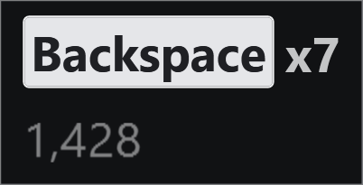
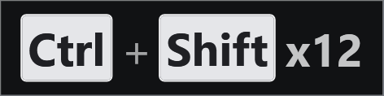
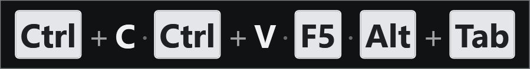

Showing keystrokes
Keystrokes mode names each key as you press it. This is the mode for a screencast, because it says which keys were pressed rather than what they produced.
All of the settings below are on the Display tab.

The Display tab. Everything in this topic is one of these rows.
How a chord is written
A combination is written the way it is written everywhere else — Ctrl + Shift + P, with a plus between the parts. That separator matters more than it looks: without it the parts are separated only by a gap, which reads as keys pressed one after another rather than together, and telling those two apart is most of what the display is for.
The modifiers are always named in the same order — Win, Ctrl, Alt, Shift — whichever order you actually pressed them in. A chord is one thing, and it should look the same each time you use it.
You can change or remove the separator on the Appearance tab, under Spacing.
Modifiers pressed on their own
Pressing Ctrl by itself produces a Ctrl entry. That is on by default and it is deliberate: in a screencast the viewer needs to see a modifier go down before the chord completes.
Turn off Show Ctrl, Alt, Shift and Win pressed on their own if you find it noisy.
Holding two together shows them as a chord: hold Ctrl and then Shift and you get one Ctrl + Shift entry, not two separate ones.
Repeat counts
Press the same thing twice quickly and it collapses into one entry with a count — Alt + Tab x3 — rather than filling the line with copies. Two keystrokes count as the same one if they arrive within Group repeats within, on the Timing tab.

A held Backspace, collapsed. Without the count this line would be seven identical caps and the panel would be seven times as wide — the collapsing is as much about the width as about the reading.
The count is the same size and weight as the key it belongs to, because when a repeat has been collapsed the number is the only thing on the panel the key name does not already say. You can make it smaller, or change how it is written, on the Appearance tab.
Held keys
Windows re-sends a held key for as long as you hold it, and A key held down on the Display tab decides what to do with that stream. Three answers.
Count up is the default: one entry with a climbing number, Backspace x12. It shows the most, and for a screencast the number is the only thing on the panel saying the key is still down — the entry itself looks identical either way.
Keep showing it, without a number leaves the entry on screen for as long as the key is held and draws no count. Choose it if you would rather see what is held than a figure that really measures how long you leaned on the key.
Show it once, then let it fade treats a held key exactly like a single press: every repeat is dropped, so the entry can disappear with the key still down. That is the point of it rather than a fault — it says what was pressed and declines to say anything about duration.
All three apply to every key, letters included. That is worth saying because it used not to be true: holding a letter grew a run — aaaaaaaaaaa — whatever this setting said, while holding F5 obeyed it. The cause was that merging consecutive typed characters was consulted first, and a repeat of the same letter is hard to tell from the same letter typed twice quickly. It is told apart now, so a held a reads a x11 or stays put without a number, as you asked. Merge consecutive typed characters still does its own job: typing letter reads letter, because those are separate presses rather than one key being held.
Held modifiers are a special case, and worth knowing about because both of the obvious behaviours are wrong in one case each:
- A modifier held on its own counts, like any other held key.
- A modifier held as part of a chord goes quiet and lets the chord do the counting. Without this, a held Alt+Tab produces
Alt,Alt+Tab,Alt,Alt+Tab— never two equal entries in a row, so nothing collapses and Alt+Tab shows no count at all.

Alt held while Tab is pressed repeatedly. The count belongs to the chord, not to Alt.
Count a modifier held down on its own turns the first of those off, if you would rather not see a number that really measures how long you leaned on the key. It applies only to Count up, and is greyed out for the other two — neither of them draws a number for it to suppress, so there is nothing for it to do. That is worth knowing if you remember it behaving otherwise: turning it off used to stop a held modifier being reported at all, which made Keep showing it lose the entry a few seconds after you pressed the key. The two settings looked complementary and were not.
Windows auto-repeats only the last key pressed. Hold Ctrl and then Shift and it is Shift that repeats — so the count you see on
Ctrl + Shiftis Shift's.
That last point has a consequence worth spelling out, because it looks like a fault. Hold Alt, then press Ctrl as well, then release Ctrl while still holding Alt: Windows now repeats nothing. Alt is still down and it has stopped saying so, permanently — releasing the later key does not hand the repeat back.
KeyPressOSD works around this rather than waiting to be told. When you let one modifier go, the entry is redrawn as the ones still held, so the panel stops claiming a chord you have come out of; and the display then asks Windows directly which keys are down, so Alt goes on counting for as long as you hold it. Two things you will notice:
- The count pauses for about a second before it picks up again. That wait is deliberate: the delay before Windows starts repeating a key is itself adjustable, up to a second, and anything shorter would count every fresh press twice over.
- It then climbs more slowly than a normal held key, because the display is driving the count on its own clock rather than the keyboard's.
Neither applies while a chord is in progress: coming off Ctrl + Shift + P shows nothing extra, because fingers leaving a finished chord are not something this display reports. And Show it once, then let it fade switches the whole behaviour off, since a fading entry is exactly what that setting asks for.
How much stays on screen
Keys build up as, on the Display tab, has three answers. They differ in the shape the keystrokes take and in when they leave.
One line, cleared all at once is the default. Keystrokes fill the line until it reaches Keystroke line length — in characters, on the Timing tab — and then the oldest scroll off the left. Nothing goes to the clock: the lifetime is measured from the last key pressed, so while you are still typing the line keeps everything, and when you stop, all of it goes together.
One line, oldest fading as they age is the same line with each entry on its own clock instead, so during a quiet moment it shortens from the left a keystroke at a time. This was the default first and was changed after being reported: a sequence you have just pressed is never all there at once, because it starts decaying from the left while you are still reading it. Choose it if the display is there to follow your typing as it happens rather than to be read back.
It is worth being precise about what it does not do. The line still has a length, and the oldest still scroll off the left when it is full. "Cleared all at once" means nothing disappears to the clock — not that the panel grows without limit, which would eventually cover the thing you were typing into.
A stack puts one keystroke per line, newest at the bottom, and is bounded by Keys shown at once rather than by a length. Whichever of those two bounds is not in use is greyed out rather than left looking live.

Four entries on one line. Four is this wide today and much wider the moment one of them is a three-key chord, which is why the one-line shapes are bounded by length and the stack is not.
A length beats a count for a line because a count of keystrokes is a poor guide to how wide the panel gets: four entries is a b c d one moment and Ctrl+Shift+Home Alt+Tab x4 Backspace F5 the next. A stack does not have that problem, because the panel grows downwards instead — which is also the reason a stack is not the default: it gets taller the busier you are, which is when it is most in the way, and it puts consecutive keystrokes in the one direction nobody reads a sequence in.
Mark where older keystrokes scrolled off adds an ellipsis at the left when something has been dropped. It is off by default, and it is suppressed while only one entry is showing — with one key on screen at a time, every keystroke replaces the last, so the mark would be permanent and would say nothing.
Typed characters
Consecutive characters grow one entry, so typing letter reads as letter rather than as six entries. Turn off Merge consecutive typed characters and each character gets its own entry instead — and a repeated letter then collapses to a count rather than growing the word.
Merged characters in keystrokes mode. Plain text, no caps — this is a run of typing, and drawing each letter as a key would make it unreadable.
Characters are drawn as plain text and named keys as key caps. That distinction is what makes a line scannable: Ctrl and Shift are objects you press, and drawing them as little keys says so, while the characters you typed are text and should look like text.
Telling one press from the next
Two separators, answering two different questions.
Between chord keys — a + by default — says these keys went down together: Alt + Tab.
Between separate presses — a · by default — says these are two presses. Without it a flowing line runs together, and Ctrl+S then h then i then Alt+Tab draws as Ctrl + S h i Alt + Tab x4, where nothing tells you which of those was a chord. With it: Ctrl + S · h · i · Alt + Tab x4.
Both are on the Appearance tab, both take any text, and either can be emptied for no separator at all. The middot is drawn in the body colour at reduced opacity rather than as a key cap, because nobody pressed it — a cap would claim they had.
Shift and the shifted character
With only Shift held, Shift+/ can be shown either as Shift + / or as ?.
The default is Shift + /, because that names the key you actually pressed — which is both how a shortcut is written down and what a screencast viewer needs in order to see that Shift was involved. Turn on With only Shift held, show the character instead of the chord for the other behaviour.
It covers every key the same way, because it is not a table of pairs: KeyPressOSD asks Windows what your keyboard produced with Shift down and shows that. So ? : " | { ~ + < > _ and ! all follow, and so do letters — Shift+a reads as A. On a layout where those keys sit elsewhere, or produce something else entirely, you get what your layout produces rather than what a US keyboard would have.
Any other modifier present and Shift is spelled out regardless — Ctrl+Shift+2 stays Ctrl+Shift+2, because Ctrl+@ is not a shortcut anybody writes.
The mouse
Show mouse clicks is on. Button presses only, not releases: showing both would double every entry for no extra information, which also means drags are not reported.
Show mouse wheel is off, and off is recommended. One turn of a wheel produces a great many events, and each would replace whatever key you had just pressed.
Clicks and arrow keys on the same line. Buttons are named rather than drawn, so a click reads as an event rather than as a key that was pressed.
The active application's icon
Show the active application icon puts the icon of the program you are typing into at the left of the line. It is off by default.
It earns its place in a screencast that moves between windows, where Ctrl+S in an editor and Ctrl+S in a browser are different acts and the keystroke alone cannot say which.
The icon sits at the left, ahead of the keys, at the height of a line of key text. Application icon size on the Appearance tab scales it against that height rather than against a fixed number of pixels, so it stays in proportion when the font changes.
Nothing is shown where the icon cannot be read — an elevated window will not tell KeyPressOSD anything about itself — and a program on the Privacy list produces no panel at all, so no icon either.
A count of keys pressed
Show a count of keys pressed adds a running total for the session on a strip beneath the keys. Off by default, and it is never written to disk: closing KeyPressOSD forgets it.
Project on GitHub · MIT licence ·
This manual is generated from docs/manual.